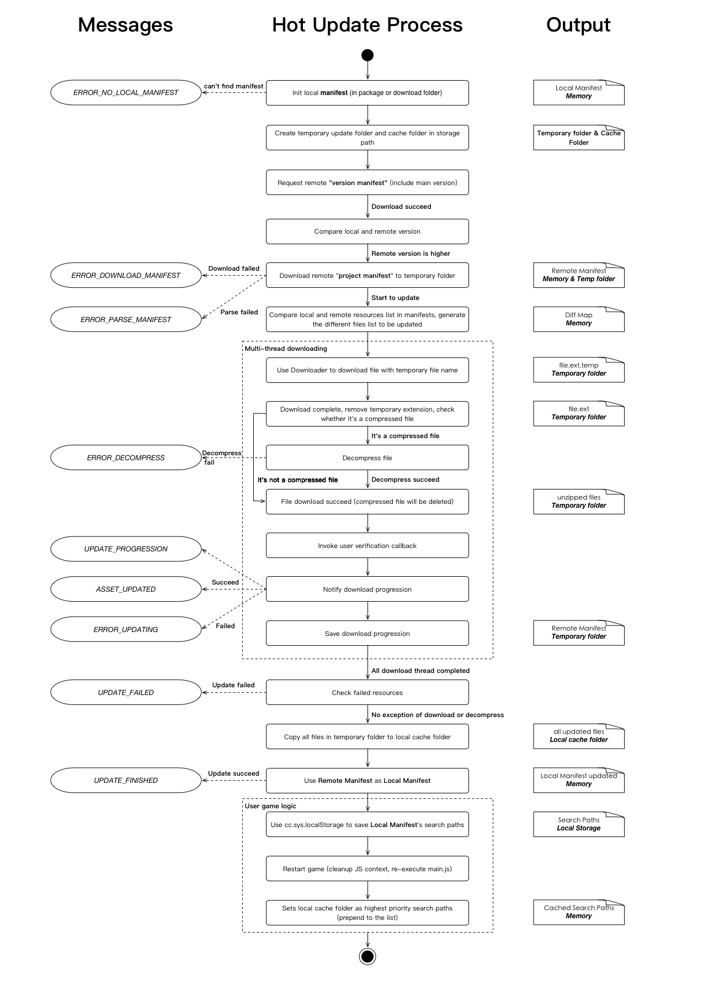
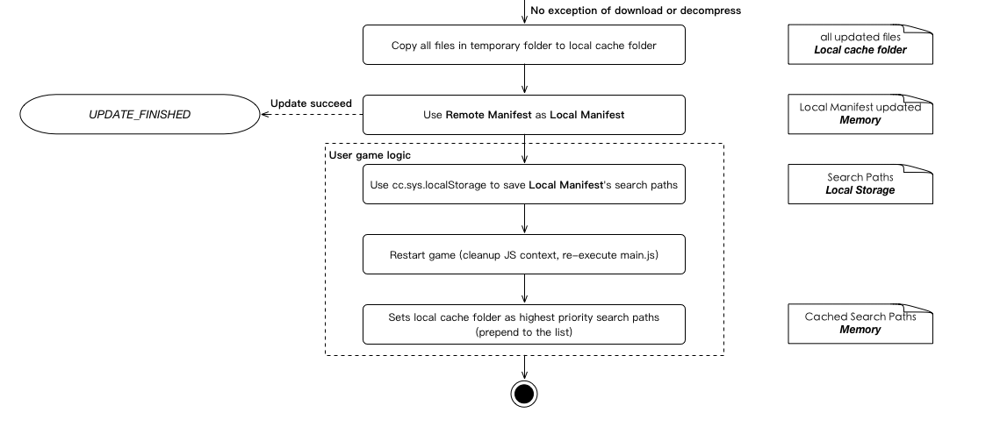
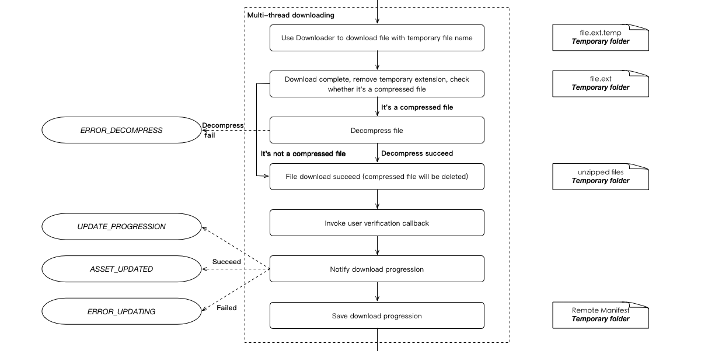

Hot Update AssetsManager
This document will fully cover the AssetsManager module for hot update, includes technical details and usage. As the requirements of the hot update process for developers may be different, and each developer may also face different problems. Developers need to fully understand the details of the hot update mechanism to be able to customize the workflow to meet their needs.
This document is relatively long, it tries to introduce the hot update mechanism gradually, but will not introduce too much user level code. First, understand how to use the hot update mechanism to update a game, try the simple tutorial example to get started.
Design goals and basic principles
The hot update mechanism essentially downloads the required assets from the server to the client, and can execute new game logic so that new assets can be used by the game. This means two of the most central goals are: to download new assets, overwrite game logic and assets. At the same time, since the hot update mechanism was originally designed in Cocos2d-JS, we considered what kind of hot update mechanism was more suitable for Cocos's JavaScript user base. Finally, we decided to use a mechanic similar to how Web page update its content to update the game content. Let's take a look at the Web content update mechanic:
- The server has complete files of all the page content
- The browser requests a web page to cache its content locally
- When the browser re-request this page, it will query the version on server version by the last modified time (Last-Modified) or unique identification (Etag). If these two value are different, then download a new file to update the local cache, if not, continue to use the cache.
The browser cache mechanism is more complex than the above description, but we can use similar basic idea. For game assets, you can also keep a copy of complete assets on the asset server. The client compare the version list with the server during updates, and download the different files and replace the cache. For the rest continues to use the client version or the cached file. So here's what we need to update the game:
- The server keeps the latest version of all the game assets (the developer can update the server at any time)
- The client sends request to get the asset different file list compare to server version
- Download all assets changed in the new version from the server
- Overwrite the old cache with the new assets and the files in the application package
This is the whole hot update process. Of course, there are very many specific details we will introduce later. What the take away here is:
Cocos default hot update mechanism is not based on the patch update mechanism, the traditional hot update is often generate patches between multiple version of packages. Client need to download patches one by one according to the order of versions. Cocos's hot update mechanism generates a list of differences by updating the differences between the latest remote version and current local version directly.
This can naturally support cross-version update, such as the local version is A, remote version is C, then directly update the difference between A and C, do not need to generate A to B and B to C update patches. Therefore, in this design, we can upload new version of the game files separately to the server.
Hot update basic workflow
After understand the basic design above, we can take a look at a typical hot update process. We use the manfiest description file to describe the asset file list and asset version that is stored locally or remotely. The manifest file definition is described later. The runtime environment assumes that the installer version is updated for the first time after the user has installed the app:

The figure is divided into three parts, the middle is the hot update process, the left is the process of updating the AssetsManager to send the message to the user, the right is the middle output of each step. The bold words indicates the location of the middle output, such as in memory / temporary folder / cache folder.
After reading this picture you may have a lot of questions. We will discuss details of the various steps that need to pay attention to or not easy to understand in the first place.
Technical details
Manifest format
The manifest file is a json format that we use to compare local and remote asset differences, including master version information, engine version information, asset file lists, and asset information:
{
"packageUrl": The local cache root path of the remote asset
"remoteVersionUrl": [optional] the path of the remote version of the file used to determine whether the server has a new version of the assets
"remoteManifestUrl": Path of the remote asset manifest file, including version information and all asset information
"version": the version of the asset
"engineVersion": engine version
"assets": all asset lists
"key": the relative path of the asset (relative to the asset root)
"md5": The md5 hash represents the version information of the asset file
"compressed": [optional] If the value is true, the file is automatically downloaded after being extracted, currently only supports zip compression format
"size": [optional] The byte size of the file used to quickly get progress information
"searchPaths": A list of search paths that need to be added to FileUtils
}
The manifest files can be generated by using the Version generator script in the hot update example.
It is important to note that the remote information (including packageUrl, remoteVersionUrl, remoteManifestUrl) is for the remote package. That is, the manifest only takes effect when installed or downloaded with a local package. (you can also update the remote package url during version update). In addition, md5 key is only for file identification so you can use other algorithm or rule to generate the file identification, such as modified date. When client compare manifest with the remote version, as long as the md5 information is different, we think this file has changed.
The difference between the assets in the project and the published package
Everyone in the creation of a Cocos Creator project, you can see it catalog under the assets of the catalog, which saved your scenes, scripts, prefab, etc., corresponding to the editor in the assets of the panel. But these engineering assets are not the same as the packaged assets, in the use of building a building to build the original version, we will find the directory to find res and src folder, these two folders are saved really let the game run up Of the game package within the assets. Where src contains all the scripts, res contains all the assets.
So our asset hot update should naturally update the built assets, not the project's assets directory.
Package assets, local cache assets and temporary assets
When the player's game is installed on the user's phone, its game is in the form of .ipa (iOS) or .apk (Android), which, after installation, can not be modified or added Of any assets within the application package will always exist. So the hot update mechanism, we can only update the local cache to the phone's writable directory (application storage space or SD card specified directory), and through the FileUtils search path mechanism to complete the local cache on the package of assets coverage. At the same time in order to protect the reliability of the update, we will update the process will first put the new version of the assets into a temporary folder, only when the update is completed, will be replaced to the local cache folder. If the midrange interrupt update or update fails, the failed version will not pollute the existing local cache. This step is described in detail in the previous section of the flow chart:

In the case of long-term updates, the local cache will always be replaced with the latest version, and the application package only until the user in the application store to update to the new version will be modified.
Progress information
In the previous section of the flow chart, you can see the hot update manager has sent UPDATE_PROGRESSION message to the user. In the current version, the progress information received by the user contains:
- byte-level progress (percentage)
- File level progress (percentage)
- The number of bytes received
- The total number of bytes
- The number of files received
- The total number of documents
function updateCb (event) {
switch (event.getEventCode ())
{
case jsb.EventAssetsManager.UPDATE_PROGRESSION:
cc.log("Byte progression : " + event.getPercent() / 100);
cc.log("File progression : " + event.getPercentByFile() / 100);
cc.log("Total files : " + event.getTotalFiles());
cc.log("Downloaded files : " + event.getDownloadedFiles());
cc.log("Total bytes : " + event.getTotalBytes());
cc.log("Downloaded bytes : " + event.getDownloadedBytes());
break;
}
}
Resume broken transfer
Definitely a developer will ask, if the process of updating the network will be how? The answer is that the hot update manager supports resume broken transfer, and also supports file-level and byte-level breakpoints.
So what exactly is it done? First of all, we use the manifest file to identify the status of each asset, such as not started, download, download success, in the hot update process, the file download will be identified to the memory of the manifest, when the number of files to download each The progress node (defaults to 10% of a node) will serialize manifest in memory and save it to a temporary folder. The concrete steps are shown in the flowcharts of the multithreaded concurrent download asset section:

After the interruption, start the hot update process again, it will check whether there is an outstanding update in the temporary folder. After checking the version and the remote match, use the manifest in the temporary folder to continue the update as the Remote manifest. At this point, for the download status is completed, will not re-download, for the downloaded file, will try to send a request to the server (the server needs to support Accept-Ranges, or start from scratch).
Control concurrency
Hot update manager provide control to download the number of concurrent API, the use of the following:
assetsManager.setMaxConcurrentTask(10);
Version comparison function
A very important step in the hot update process is to compare the client and server versions, by default only when the primary version of the server is updated over the client major version. The engine implements a version of the comparison function, support the x.x.x.x four sequence versions of the comparison function (x is a pure number), do not conform to this version number mode will continue to use the string comparison function.
In addition, we also allow users to use their own version of the contrast:
// both versionA and versionB are string types.
assetsManager.setVersionCompareHandle(function (versionA, versionB) {
var sub = parseFloat(versionA) - parseFloat(versionB);
// When the return value is greater than 0, versionA > versionB.
// When the return value is equal to 0, versionA = versionB
// When the return value is less then 0, versionA < versionB
return sub;
});
Verify file after downloaded
During the download process, problems with the downloaded file contents may occur due to network problem or other network libraries. So we provide the user file verification interface, which is called by the Assets Manager after the file is downloaded (in the case of user implementation). If returning true indicates that the file is OK, returning false indicates that there is a problem with the file.
assetsManager.setVerifyCallback(function (filePath, asset) {
var md5 = calculateMD5(filePath);
if (md5 === asset.md5)
return true;
else
return false;
});
The asset version in manifest is recommended to use md5. You can determine whether the file is correct by calculating the md5 code of the downloaded file in the verify function and comparing it with the md5 of the asset. In addition to md5, the asset object also contains the following properties:
| Property | Function Explanation |
|---|---|
| path | The relative path of the server side |
| compressed | Whether it is compressed |
| size | File state |
| downloadState | Download size, includes UNSTARTED, DOWNLOADING, SUCCESSED, UNMARKED |
Error message handling and download retry
In the left side of the flowchart, you can see a number of user messages that can be notified through the event listener of the Assets Manager. For details, you can refer to the example. The flowchart identifies the trigger and cause of all error messages, and you can handle them according to your system design.
The most important thing is that when an exception occurs during the download process, such as a failed download, a failed decompression, or a failed verification, the UPDATE_FAILED event will be triggered. And a list of all assets that failed to download will be recorded in the Assets Manager and can be downloaded again as follows:
assetsManager.downloadFailedAssets();
When the interface is called, it will restart the hot update process and only download the assets failed before. The entire process is the same as the normal hot update process.
The necessity of restart
If you want to use hot updated assets, you need to restart the game.
There are two reasons, the first is that the updated script requires a clean JS environment. The second is the assets configuration that used by AssetManager needs to be updated to the latest to load the scene and assets properly.
Refresh of JS script
Before the hot update, all the scripts in the game have been executed, and all the classes, components, objects have already been stored in JS context. So if you load the script directly after the hot update without restarting the game, the classes and objects of the same name will be overwritten, but the objects created by the old scripts will still exist. Further, as a result of the overwriting, their dynamic state is also reset, causing the two versions of the objects to mix together, which comes with an overhead of memory usage.
Refresh of asset configuration
Creator's scenes and assets depend on the Asset Bundle. That is, the game will not be able to load the new scenes and assets without the Asset Bundle being reloaded and parsed by Asset Manager.
Enabling new assets relies on the search path mechanism of the Cocos engine. All files in the Cocos are read by FileUtils, which finds files in the priority order of the search path. So we add the hot update cache directory to the search path and promote it so that the assets in the cache directory are searched first. Here is the code example:
if (jsb) {
// Create AssetsManager
var assetsManager = new jsb.AssetsManager(manifestUrl, storagePath);
// The local manifest in the initialized AssetsManager is the manifest in the cache directory
var hotUpdateSearchPaths = assetsManager.getLocalManifest().getSearchPaths();
// The search path by default
var searchPaths = jsb.fileUtils.getSearchPaths();
// Insert hotUpdateSearchPaths to the beginning of searchPaths array
Array.prototype.unshift.apply(searchPaths, hotUpdateSearchPaths);
jsb.fileUtils.setSearchPaths(searchPaths);
}
Note: that this code must be placed in main.js and executed before it require other script, otherwise it will still load the script from the application package.
Advanced Topics
The above sections describe most of the implementation and usage of the Hot Update AssetsManager. But in some special scenarios, you may need some special tricks to avoid the problems caused by hot updates. But in some specific application scenes, you may need some special techniques to avoid problems caused by hot updates.
Iterative upgrade
Hot update is a frequent requirement for game developers, and multiple hot updates may be released during the upgrade from one major version to another. So the following two questions are of more concern to developers:
What happens during a local cache coverage?
When a local cached version already exists in the user's environment, the Assets Manager compares the cached version and the in-app version, and then uses the newer version as the local version. If the remote version is updated at this time, the Assets Manager uses a temporary folder to download the remote version during the update process. When the remote version is successfully updated, the contents of the temporary folder are copied to the local cache folder. If there are files of the same name in the local cache folder, they are overridden. And the other files are retained, because these files may still be valid, they just have not been modified in this release. Finally delete the temporary folder.
So, in theory, there's no problem with continuous hot update for minor version.
How to clean the local cache during a game's major release?
During a package update, there are various ways to thoroughly clean up the local hot update cache, such as recording the current game version number, checking if it matches the saved version in
cc.sys.localStorage, and performing the following cleanup if they don't match:// The version number previously saved in local Storage, if not, is considered as new version var previousVersion = parseFloat(cc.sys.localStorage.getItem('currentVersion')); // game.currentVersion is the current version's number. if (previousVersion < game.currentVersion) { // The hot update cache directory. If there are multiple versions, you may need to record in a list and clean all. jsb.fileUtils.removeDirectory(storagePath); }
Update engine
Upgrading the engine version can have a huge impact on the hot update, and you may have noticed that there is a src/cocos-js/cc.js file in the native project, which is compiled by the JS engine and contains some interface encapsulations for the JS engine framework. In different versions of engine, its code will be quite different, and the bottom layer of C++ will also change simultaneously. Once the C++ engine version in the game pack does not match the engine version in the src/cocos-js/cc.js, it can cause serious problems and even prevent the game from running.
It is recommended to publish the major version to app stores as much as possible after updating the engine. If you decide to use hot update, please carefully complete the test of updating the old version to the new version.